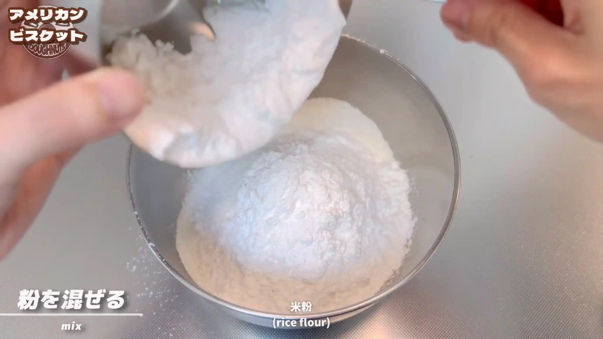
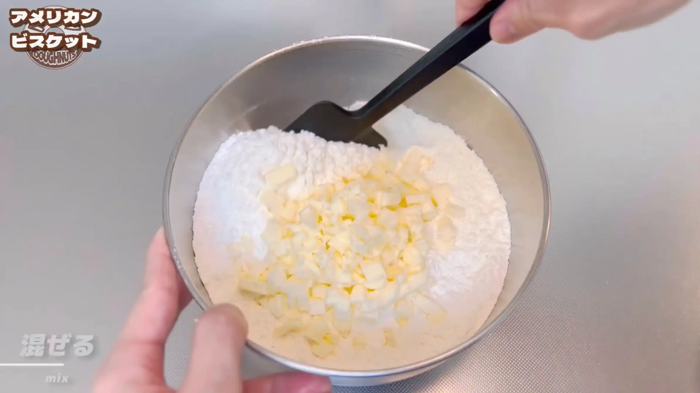
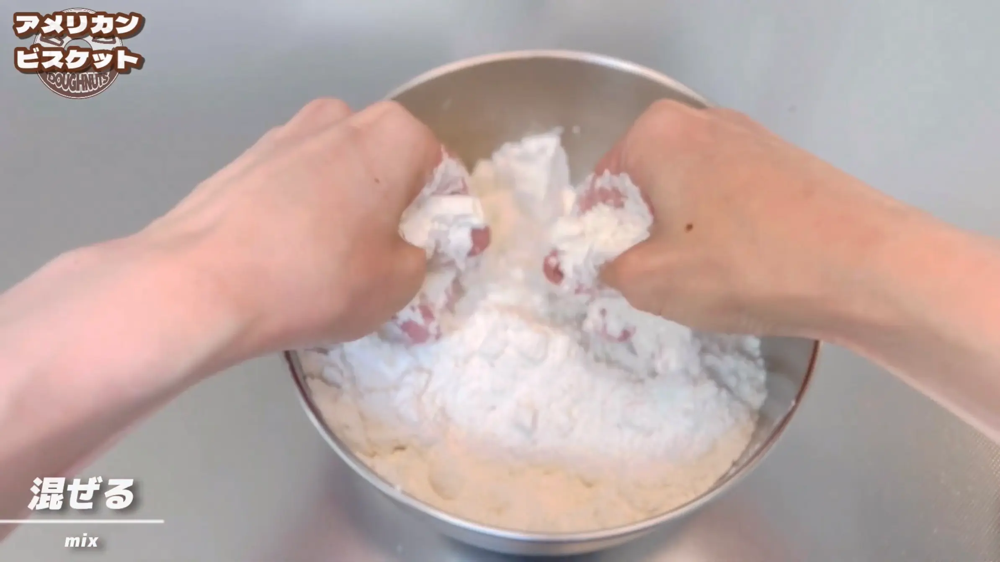
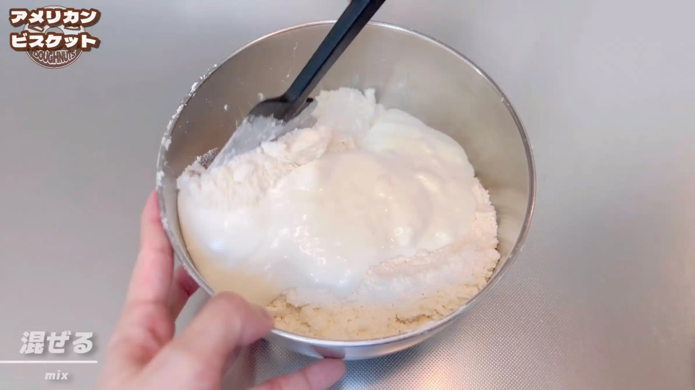
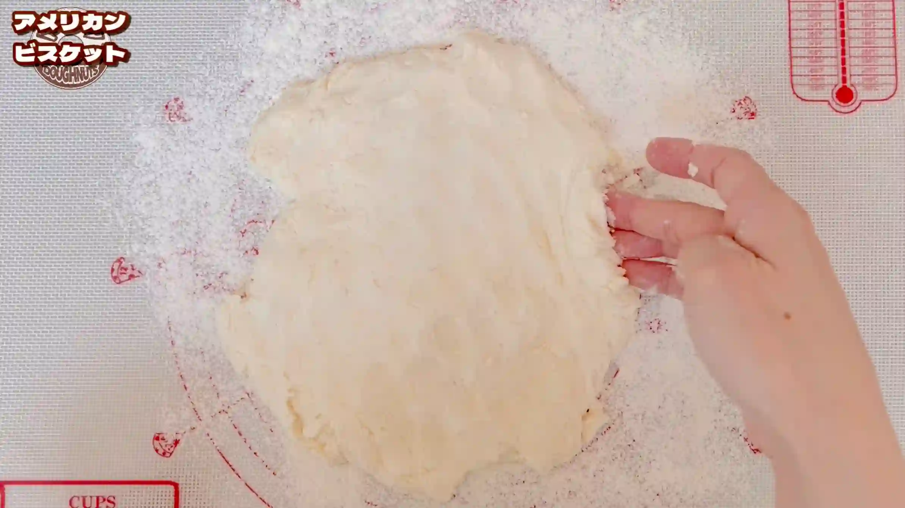
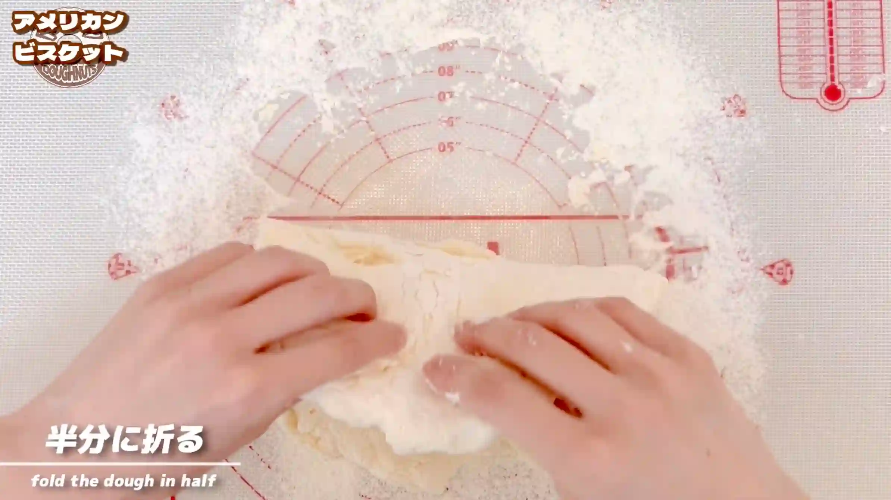
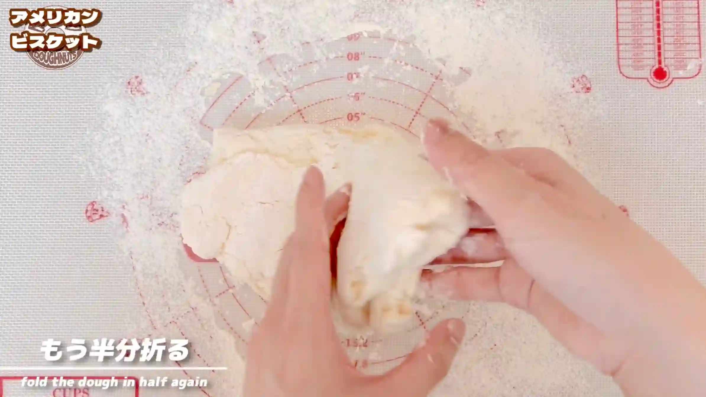
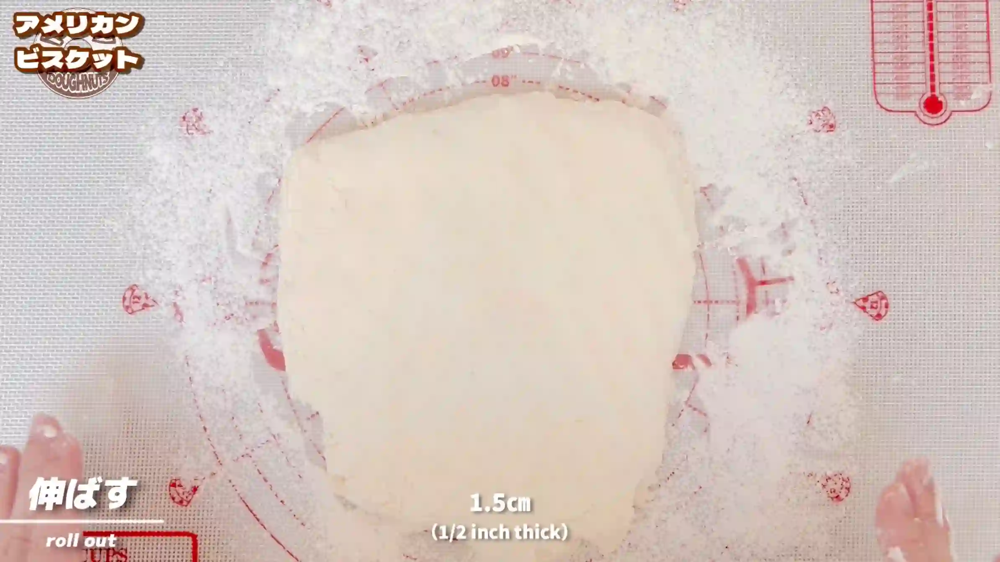
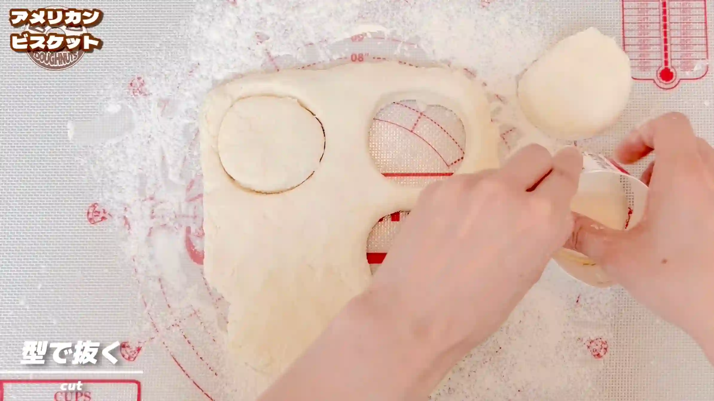
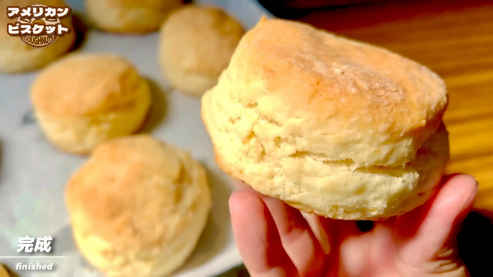

材料 9個分
※粉量を変えると自動計算されます
生地
型
作り方
生地
STEP 1
強力粉と米粉を入れ、混ぜる
ボウルに振るった強力粉、米粉を入れ、全体が均一になるように混ぜ合わせます。
ボウルに振るった強力粉、米粉を入れ、全体が均一になるように混ぜ合わせます。

STEP 2
バターを加え、混ぜる（[動画 02:32]）
1㎝角に切って冷やしておいたバターを加え、ヘラでバターに粉をまぶすように軽く混ぜ合わせます。バターが溶けないよう、手早く作業するのがポイントです。
1㎝角に切って冷やしておいたバターを加え、ヘラでバターに粉をまぶすように軽く混ぜ合わせます。バターが溶けないよう、手早く作業するのがポイントです。

STEP 3
手で生地をこすり合わせる（[動画 02:57]）
バターを指先でつぶしながら粉とこすり合わせ、全体を粉チーズのような状態にします。粉をバターでコーティングすることで、グルテンの形成を抑え、さっくりした食感に仕上げていきます。バターの塊がなくなったら、次の工程へ進みます。
バターを指先でつぶしながら粉とこすり合わせ、全体を粉チーズのような状態にします。粉をバターでコーティングすることで、グルテンの形成を抑え、さっくりした食感に仕上げていきます。バターの塊がなくなったら、次の工程へ進みます。

STEP 4
ヨーグルトを加え、混ぜる（[動画 04:13]）
ヨーグルトを加え、ヘラでさっくり混ぜ合わせます。生地をこねすぎると強力粉のグルテンが出て、重い食感になりやすいため、粉っぽさが少し残るくらいまで混ぜればOKです。
ヨーグルトを加え、ヘラでさっくり混ぜ合わせます。生地をこねすぎると強力粉のグルテンが出て、重い食感になりやすいため、粉っぽさが少し残るくらいまで混ぜればOKです。

STEP 5
オーブンを200℃に予熱する
生地を成形する間に、オーブンを200℃に予熱しておきます。成形が終わったらすぐに焼けるよう、あらかじめ焼成温度まで温めておきます。
生地を成形する間に、オーブンを200℃に予熱しておきます。成形が終わったらすぐに焼けるよう、あらかじめ焼成温度まで温めておきます。
STEP 6
生地を厚さ1.5㎝に伸ばす（[動画 05:08]）
生地がくっつかないよう作業台に打ち粉をし、手で1.5㎝ほどの厚さに伸ばします。ここでは生地を押しつぶしすぎず、粗い状態を残したまま伸ばします。生地の端がジグザグしていますが、この後型でくり抜くため、整えなくて大丈夫です。
生地がくっつかないよう作業台に打ち粉をし、手で1.5㎝ほどの厚さに伸ばします。ここでは生地を押しつぶしすぎず、粗い状態を残したまま伸ばします。生地の端がジグザグしていますが、この後型でくり抜くため、整えなくて大丈夫です。

STEP 7
生地を半分に折りたたむ（[動画 05:38]）
生地を半分に折りたたみます。
生地を半分に折りたたみます。

STEP 8
さらに半分に折りたたむ（[動画 05:48]）
さらに半分に折りたたみ、全体を1/4の大きさにします。折りたたむことで、生地の中に層ができ、焼き上がりの食感につながります。
さらに半分に折りたたみ、全体を1/4の大きさにします。折りたたむことで、生地の中に層ができ、焼き上がりの食感につながります。

STEP 9
生地を厚さ3㎝に伸ばす（[動画 05:57]）
折りたたんだ生地を3㎝ほどの厚さに伸ばします。動画では1.5㎝にしていますが、3㎝ほどの厚さにすることで、焼き上がりに高さが出て、ふっくらとしたビスケットに仕上がります。
折りたたんだ生地を3㎝ほどの厚さに伸ばします。動画では1.5㎝にしていますが、3㎝ほどの厚さにすることで、焼き上がりに高さが出て、ふっくらとしたビスケットに仕上がります。

STEP 10
型で抜き、天板に並べる（[動画 06:04]）
型で生地を抜き、オーブンシートを敷いた天板に並べます。余った生地はまとめて再び伸ばして使います。型は、牛乳パックの縦のラインを切り、ホッチキスで止めるだけで簡単に作れます。詳しい作り方は、動画で紹介しています。
型で生地を抜き、オーブンシートを敷いた天板に並べます。余った生地はまとめて再び伸ばして使います。型は、牛乳パックの縦のラインを切り、ホッチキスで止めるだけで簡単に作れます。詳しい作り方は、動画で紹介しています。

STEP 11
オーブン200℃で18分焼く
表面がきつね色になり、側面もしっかり膨らむまで焼きます。焼き時間は目安とし、焼き色を確認しながら、ご家庭のオーブンに合わせて調整してください。
表面がきつね色になり、側面もしっかり膨らむまで焼きます。焼き時間は目安とし、焼き色を確認しながら、ご家庭のオーブンに合わせて調整してください。

動画でチェック
おいしく作るためのワンポイントコラム
こんにちは、おなおドーナツです！
今回は、米粉を使ってアメリカ南部の朝食で親しまれている素朴な『アメリカンビスケット』を作っていきます。発酵に時間がかかるパンよりも、短時間でサッと作れるビスケットは、水分を吸いやすい米粉にぴったりなメニュー。しっとりした優しい食感に仕上げるための3つのコツをまとめました。
① 米粉選びのコツ
米粉を選ぶ際は、必ずパッケージの『原材料』を確認してうるち米100%のものを選ぶのがポイントです。米粉にはグルテン配合や増粘剤入りなど様々な種類があり、成分が違うと小麦粉の薄力粉と強力粉くらい別物の仕上がりになってしまいます。レシピ通りの食感にするためにも、純粋な米粉を選ぶことが大切です。
② 配合のコツ
しっとり感を長持ちさせるために、 米粉1：強力粉1の割合でブレンドして仕込むのが美味しさのコツです。強力粉の力を少し借りることで、米粉特有のパサつきを抑え、日が経ってもしっとりした優しい食感が長持ちする絶妙な塩梅の生地になります。
③ 成形のコツ
冷えたバターを粉にすり混ぜた後は、粉っぽさが残るくらいで混ぜすぎずに生地をまとめるのがコツです。生地をこねすぎたり触りすぎたりすると、強力粉からグルテンが出すぎてベタベタした重い食感になります。そのため、少しじゃみじゃみした粗い状態でざっくり折って型抜きをすることで、サクッとしっとりした歯応えが生まれます。
オーブンから漂うバターの香りに包まれ、焼きたてをかじると素朴でほんのり優しい甘み。とても幸せな気持ちになりますね！それでは、おうちパン作りの時間を一緒に満喫しましょう！
今回は、米粉を使ってアメリカ南部の朝食で親しまれている素朴な『アメリカンビスケット』を作っていきます。発酵に時間がかかるパンよりも、短時間でサッと作れるビスケットは、水分を吸いやすい米粉にぴったりなメニュー。しっとりした優しい食感に仕上げるための3つのコツをまとめました。
① 米粉選びのコツ
米粉を選ぶ際は、必ずパッケージの『原材料』を確認してうるち米100%のものを選ぶのがポイントです。米粉にはグルテン配合や増粘剤入りなど様々な種類があり、成分が違うと小麦粉の薄力粉と強力粉くらい別物の仕上がりになってしまいます。レシピ通りの食感にするためにも、純粋な米粉を選ぶことが大切です。
② 配合のコツ
しっとり感を長持ちさせるために、 米粉1：強力粉1の割合でブレンドして仕込むのが美味しさのコツです。強力粉の力を少し借りることで、米粉特有のパサつきを抑え、日が経ってもしっとりした優しい食感が長持ちする絶妙な塩梅の生地になります。
③ 成形のコツ
冷えたバターを粉にすり混ぜた後は、粉っぽさが残るくらいで混ぜすぎずに生地をまとめるのがコツです。生地をこねすぎたり触りすぎたりすると、強力粉からグルテンが出すぎてベタベタした重い食感になります。そのため、少しじゃみじゃみした粗い状態でざっくり折って型抜きをすることで、サクッとしっとりした歯応えが生まれます。
オーブンから漂うバターの香りに包まれ、焼きたてをかじると素朴でほんのり優しい甘み。とても幸せな気持ちになりますね！それでは、おうちパン作りの時間を一緒に満喫しましょう！


米粉と強力粉をバランスよくブレンドして焼き上げる、素朴で優しい味わいの『アメリカンビスケット』のレシピです！時短でサッと作れるビスケットは、吸水性の高い米粉と相性抜群。コラムでは「米粉選びのコツ」「配合のコツ」「成形のコツ」の3つのポイントをシンプルにご紹介します。